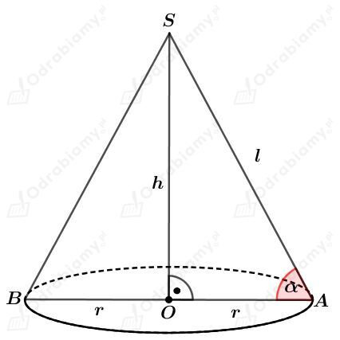
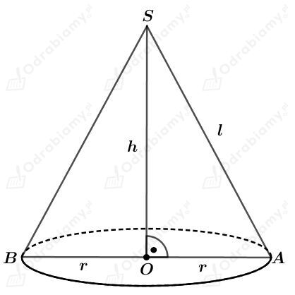
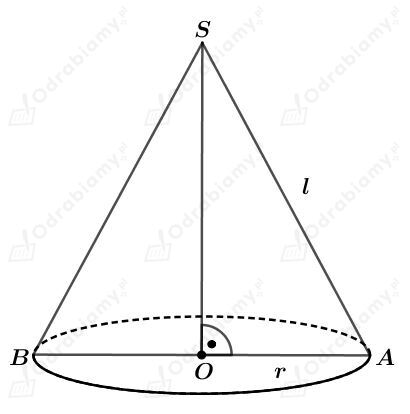
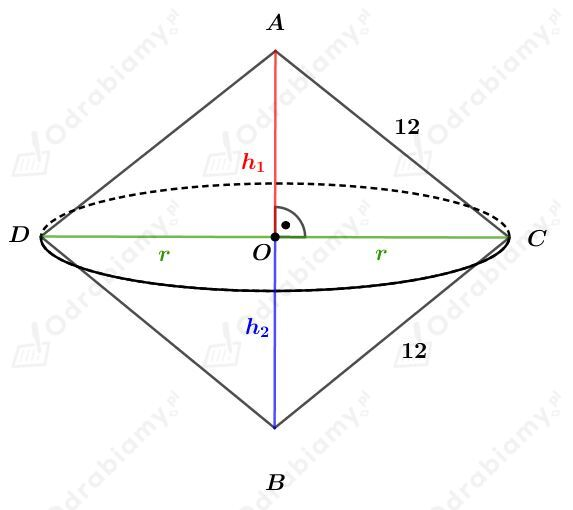
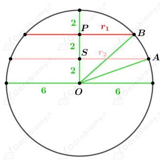

Dany jest walec, którego przekrój osiowy jest kwadratem. Niech promień podstawy tego walca ma długość r, więc jego wysokość ma długość 2r.
Wyznaczmy pole powierzchni bocznej tego walca. Mamy:
Wyznaczmy pole powierzchni całkowitej tego walca. Mamy:
Wyznaczmy stosunek pola powierzchni całkowitej tego walca do pola jego powierzchni bocznej. Mamy:
Rysunek:

Wiedząc, że średnica podstawy stożka jest dwa razy krótsza od jego tworzącej mamy:
Korzystając z twierdzenia Pitagorasa dla trójkąta OAS mamy:
Wyznaczmy tangens kąta 𝛼. Mamy:
Rysunek:

Przekrojem tego stożka jest trójkąt równoboczny o boku długości l i polu równym 9√3 cm2. Korzystając ze wzoru na pole trójkąta równobocznego mamy:
Skoro trójkąt BAS jest trójkątem równobocznym, to
Wyznaczmy długość wysokości h. Korzystając ze wzoru na długość wysokości trójkąta równobocznego mamy:
Wyznaczmy objętość tego stożka. Mamy:
Dana jest kula o promieniu długości R.
Pole powierzchni P tej kuli jest równe sumie pól powierzchni dwóch kul o promieniach długości 3 cm i 6 cm. Mamy stąd:
Zatem
Wyznaczmy objętość tej kuli. Mamy:
Szklanka ma kształt walca o średnicy podstawy długości 6 cm i wysokości długości 8 cm.
Wyznaczmy objętość tej szklanki. Mamy:
Szklanki napełniamy po brzegi sokiem znajdującym się w dwóch kartonach w kształcie prostopadłościanu o wymiarach 10 cm x 8 cm x 15 cm.
Wyznaczmy objętość soku. Mamy:
Wyznaczmy, ile szklanek możemy napełnić sokiem. Mamy:
Więc sokiem możemy napełnić 10 szklanek po brzegi.
Rysunek:

Wyznaczmy pole powierzchni całkowitej tego stożka. Mamy:
Wyznaczmy pole powierzchni bocznej tego stożka. Mamy:
W dowolnym trójkącie prostokątnym długość przyprostokątnej r jest mniejsza od długości przeciwprostokątnej l. Zatem
czyli
Otrzymaliśmy, że
Uzasadnimy, że pole powierzchni bocznej stożka stanowi więcej niż 50% jego pola powierzchni całkowitej.
ckd.
Rysunek:

Trójkąt ABC jest równoboczny, więc:
Długość r jest wysokością trójkąta równobocznego o boku długości 12 cm. Korzystając ze wzoru na długość wysokości trójkąta równobocznego mamy:
Wyznaczmy objętość tej bryły jako sumę objętości dwóch stożków (górnego i dolnego). Mamy:
Dana jest kula o środku w punkcie O i promieniu długości 6 cm.
Podaną kulę przecięto dwoma równoległymi płaszczyznami dzielącymi promień tej kuli na trzy równe odcinki.
Podane przekroje są kołami o promieniach długości r1 i r2.
Rysunek:

Korzystając z twierdzenia Pitagorasa dla trójkąta OAS mamy:
Korzystając z twierdzenia Pitagorasa dla trójkąta OBP mamy:
Wyznaczmy sumę pól otrzymanych kół. Mamy:
Dany jest ostrosłup o objętości V i wysokości długości 8 cm.
Podany ostrosłup przecięto płaszczyzną równoległą do podstawy. Otrzymano dwie bryły o równych objętościach.
Niech V1 będzie objętością ostrosłupa nad płaszczyzną, a h1 długością jego wysokości.
Niech k będzie skalą podobieństwa całego ostrosłupa do górnego ostrosłupa. Mamy więc:
Zatem
Wyznaczmy długość wysokości h1. Mamy: